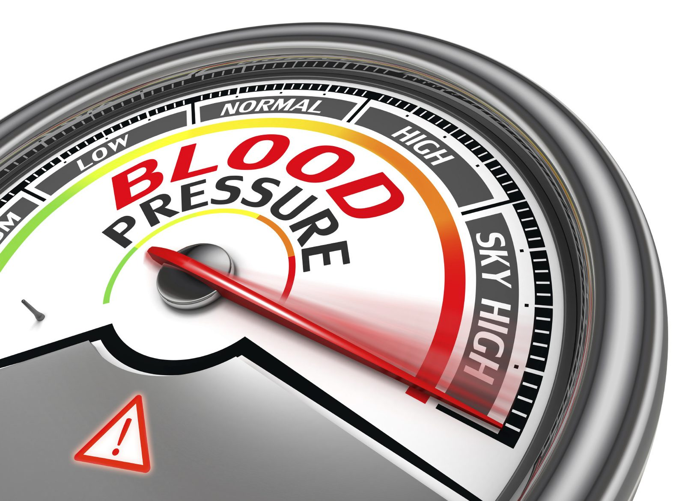

What points address high blood pressure?

Introduction
High blood pressure (hypertension) is a common health concern that increases the risk of heart disease, stroke, and kidney problems. While medication and lifestyle changes are the primary treatments, many individuals seek alternative therapies like reflexology to help regulate blood pressure naturally. But what reflexology points address high blood pressure, and how can they be used effectively? This article explores key reflexology points, techniques, and how they contribute to cardiovascular health.
Understanding High Blood Pressure and Its Causes
High blood pressure occurs when the force of blood against the artery walls remains consistently too high. It is classified into two types:
- Primary Hypertension: Develops over time without a specific underlying cause.
- Secondary Hypertension: Caused by an underlying condition such as kidney disease or hormonal imbalances.
Common Causes of High Blood Pressure
- Poor Diet: High sodium and processed foods contribute to hypertension.
- Lack of Physical Activity: A sedentary lifestyle weakens circulation.
- Chronic Stress: Long-term stress increases blood pressure.
- Obesity: Excess weight puts strain on the heart and blood vessels.
- Smoking and Alcohol Consumption: Both habits can raise blood pressure levels.
- Genetic Factors: A family history of hypertension increases risk.
How Reflexology Can Help Manage High Blood Pressure
Reflexology is a holistic therapy that involves applying pressure to specific points on the feet, hands, and ears that correspond to different organs and body systems. When correctly stimulated, these reflex points can help promote relaxation, improve circulation, and support overall cardiovascular health. Reflexology does not replace medical treatments but serves as a complementary approach to blood pressure management.
Key Reflex Points for High Blood Pressure Relief
Stimulating specific reflex points may help balance blood pressure by improving circulation and reducing stress.
- Heart Reflex Point (Feet and Hands)
Location: The ball of the foot and the center of the palm.
How It Helps: Stimulating this reflex helps regulate heart function and blood circulation.
How to Apply Pressure: Use steady circular motions for 2-3 minutes.
- Kidney Reflex Point (Feet)
Location: The middle of the foot’s sole, slightly above the heel.
How It Helps: Supports kidney function, which helps balance fluids and reduce hypertension.
How to Apply Pressure: Press firmly for 30-60 seconds, then massage gently.
- Liver Reflex Point (Feet and Hands)
Location: On the outer arch of the foot and below the thumb on the palm.
How It Helps: The liver plays a crucial role in blood detoxification and pressure regulation.
How to Apply Pressure: Apply steady pressure for 1-2 minutes using small circular movements.
- Solar Plexus Reflex Point (Feet)
Location: The center of the foot just below the ball.
How It Helps: Helps in stress relief and promotes relaxation, reducing hypertension risks.
How to Apply Pressure: Press firmly for 30 seconds while taking deep breaths.
- Adrenal Gland Reflex Point (Feet and Hands)
Location: Slightly above the kidney reflex point on the soles of the feet and the base of the thumbs.
How It Helps: Regulates stress hormone production, which affects blood pressure levels.
How to Apply Pressure: Apply deep pressure for 1 minute and release.
Reflexology Techniques for Blood Pressure Regulation
Using specific reflexology techniques can help improve the effectiveness of reflex point stimulation.
- Thumb Walking
This technique involves walking the thumb in small, firm steps over reflex points to activate circulation and relaxation.
- Circular Massage
Massaging reflex points in circular motions can enhance relaxation and improve blood flow.
- Sustained Pressure
Holding pressure on key reflex points for 30-60 seconds can support long-term blood pressure management.
- Deep Breathing with Reflexology
Pairing deep breathing exercises with reflexology enhances relaxation and stress reduction, contributing to lower blood pressure.
Scientific Evidence Supporting Reflexology for Blood Pressure Management
While reflexology is not a replacement for medical treatment, some studies suggest it may support hypertension management.
- A 2016 Study in the Journal of Hypertension Research found that reflexology sessions helped reduce blood pressure in individuals with mild hypertension.
- A 2019 Review Published in Complementary Therapies in Clinical Practice highlighted the potential benefits of reflexology in stress reduction, which plays a key role in managing high blood pressure.
- A 2021 Study in the International Journal of Cardiovascular Therapy suggested that reflexology improved circulation and lowered systolic blood pressure in participants.
How to Incorporate Reflexology into Your Daily Routine
To make reflexology part of your hypertension management plan, consider the following:
- Daily Self-Reflexology: Spend 5-10 minutes massaging key reflex points.
- Professional Reflexology Sessions: Work with a trained reflexologist for optimal benefits.
- Combine with Lifestyle Changes: A healthy diet, exercise, and stress management enhance reflexology’s effects.
- Stay Hydrated: Proper hydration supports kidney function and circulation.
- Monitor Your Blood Pressure Regularly: Track progress while using reflexology alongside medical treatments.
Additional Natural Remedies for High Blood Pressure
Reflexology can be combined with other natural methods to improve hypertension management.
- Meditation and Mindfulness
Practicing meditation and mindfulness helps lower stress and blood pressure.
- Herbal Teas
Hibiscus and green tea are known for their blood pressure-lowering effects.
- Regular Exercise
Engaging in activities like walking, yoga, and swimming can help maintain healthy blood pressure levels.
- Balanced Diet
Eating potassium-rich foods such as bananas, spinach, and avocados can support heart health.
Conclusion: Can Reflexology Help Lower High Blood Pressure?
Reflexology offers a natural, non-invasive approach to managing high blood pressure. By stimulating specific reflex points, it may help improve circulation, reduce stress, and support overall cardiovascular health. While reflexology should not replace medical treatment, incorporating it into your daily routine can be a valuable complement to a holistic hypertension management plan.